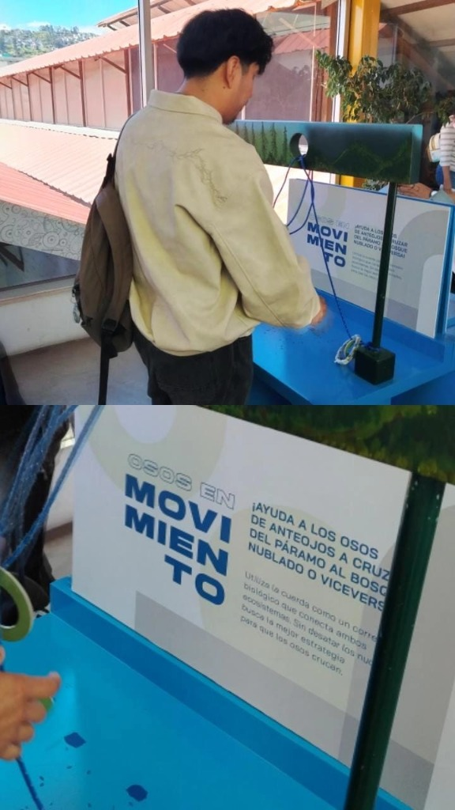
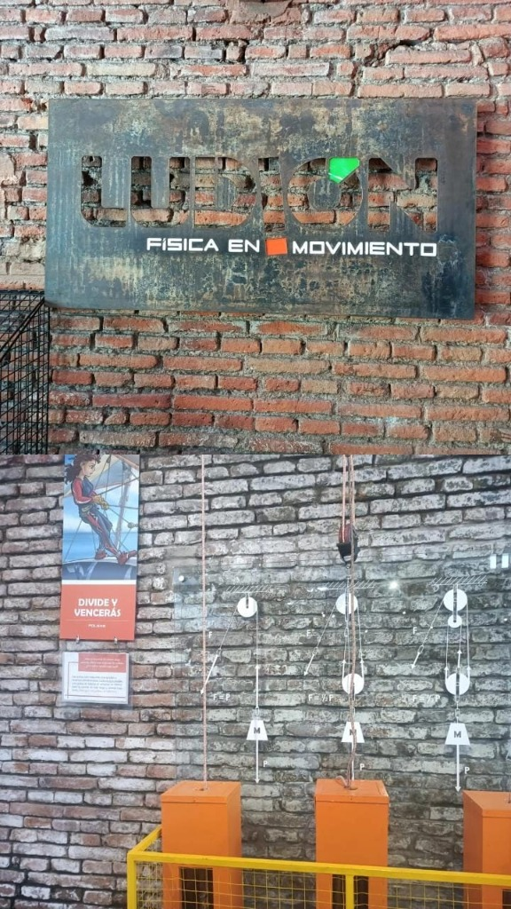
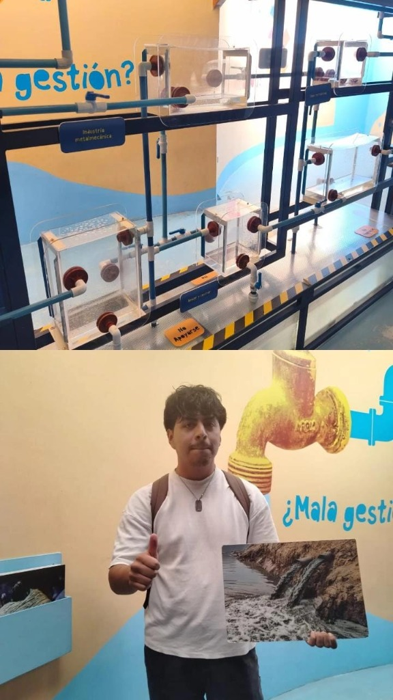

Resolución del desafío físico-topológico para trazar el corredor biológico del oso de anteojos.
Módulo "Osos en Movimiento"
Simulador de Corredores Biológicos y Resolución de Problemas
En el módulo "Osos en Movimiento", el visitante se enfrenta a un desafío lógico-espacial de resolución de problemas topológicos. Cognitivamente, el usuario debe construir una representación mental del espacio (el bosque nublado, el páramo y el corredor ecológico) y de las restricciones físicas de la cuerda. La memoria de trabajo y el ejecutivo central procesan en tiempo real las posibles trayectorias del aro a través de los nudos fijos.
A través de la planificación estratégica, el estudiante formula hipótesis espaciales y evalúa los obstáculos físicos de forma sistemática. La diferencia entre el estado de bloqueo inicial del oso y la meta (completar el corredor biológico) estimula funciones ejecutivas como la previsión y la flexibilidad mental, reestructurando esquemas geométricos y físicos previos para asimilar la estructura tridimensional del problema.
"La percepción no es un simple reflejo de la realidad física, sino un proceso activo de construcción en el cual el sujeto interpreta los datos sensoriales a partir de sus esquemas cognitivos previos."
— (Piaget, 1975, p. 84)

Comprobación experimental de ventaja mecánica y sistemas de transmisión de fuerzas.
Física Interactiva
Palancas, Poleas y Transmisión de Fuerza
La manipulación de sistemas de poleas y palancas requiere que el estudiante procese variables físicas abstractas (fuerza, distancia, resistencia) y las traduzca a un modelo de causalidad directa. La memoria de trabajo, de capacidad inherentemente limitada, se activa para codificar la proporción: a mayor número de poleas disminuye el esfuerzo físico requerido, pero se incrementa la longitud de cuerda necesaria.
El visitante recupera de su memoria a largo plazo conceptos previos de física y los confronta con los datos inmediatos del experimento. El procesamiento semántico exitoso de esta experiencia reorganiza su esquema cognitivo en torno a la ventaja mecánica, convirtiendo una sensación sensorio-motriz en un concepto estructurado en su mapa cognitivo de conceptos preexistentes.
"El aprendizaje significativo ocurre cuando la nueva información se conecta de manera sustancial y no arbitraria con los conceptos preexistentes en la estructura cognitiva del sujeto."
— (Ausubel, 1968, p. 55)

Interactividad con el simulador de distribución hídrica y llaves de paso para el análisis de consumo sectorial.
Interactúa: Usa el deslizador para apretar la botella. Observa cómo cambia el volumen del gas en el gotero y su flotabilidad.
Módulo de Gestión del Agua
Simulador Físico de Distribución y Consumo Sectorial
En este módulo de la sala "Ludión", la manipulación de las llaves de paso y la observación de recipientes de distinto volumen activan procesos cognitivos complejos ligados a la resolución de problemas y la formación de modelos mentales. Al responder a la pregunta reflexiva de la exhibición —¿cómo distribuirías el agua si estuviera en tus manos, frente a cómo se distribuye realmente?—, el estudiante experimenta una disonancia cognitiva entre sus esquemas éticos de equidad y la realidad empírica de los contenedores (donde los tanques de mayor tamaño representan a la industria o agroindustria, evidenciando un consumo dispar frente al doméstico).
La memoria de trabajo codifica de forma analítica las variables operativas (estado de las llaves de paso, dirección del flujo gravitacional y velocidad de llenado por sector). El procesamiento semántico de este contraste reestructura el esquema previo de la escasez del agua, transformando una noción intuitiva y abstracta del recurso en una comprensión estructurada y crítica de la geopolítica del consumo de recursos.
"Para que el aprendizaje ocurra, la estructura cognitiva del alumno debe reorganizarse mediante la resolución de problemas que presenten un reto intelectual."
— (Ausubel, 1976, p. 112)